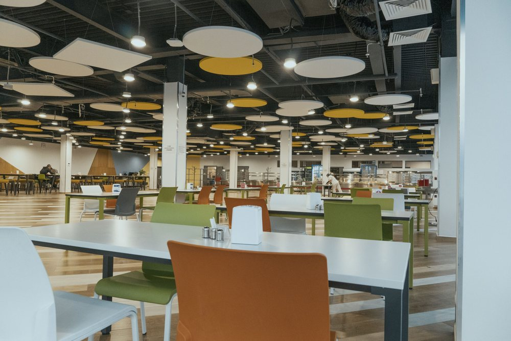
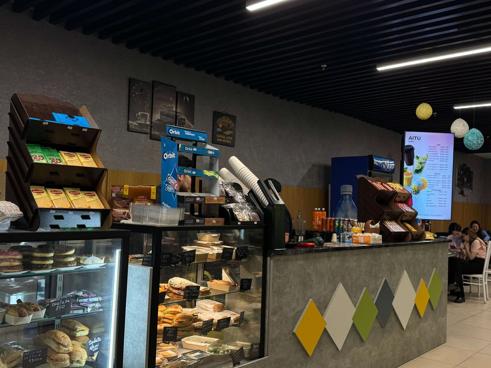
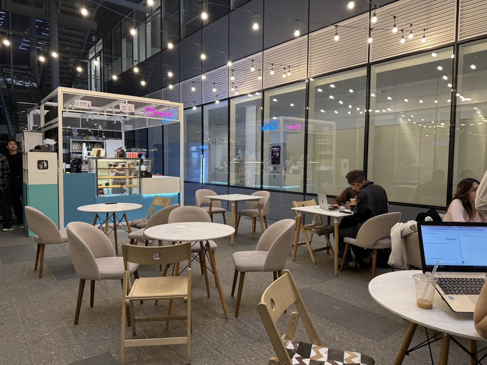
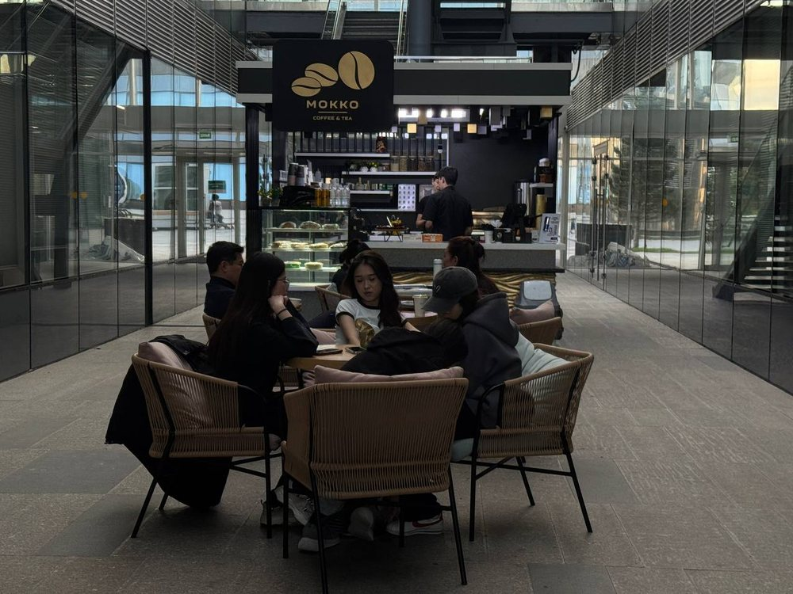
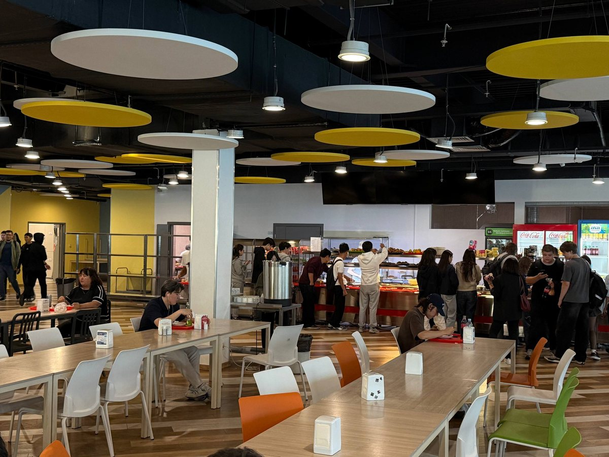

Cafeteria
Hot dishes, soups, salads, fresh bakery and dairy at the lowest prices on campus. The biggest and busiest spot, so expect a line at lunchtime.
Find a full lunch, your usual coffee, or something sweet between classes.
All four spots are on the 1st floor of building C1.

Hot dishes, soups, salads, fresh bakery and dairy at the lowest prices on campus. The biggest and busiest spot, so expect a line at lunchtime.

Iced coffee and tea, sandwiches and ready-to-go meals in a cozy indoor corner. Good for sitting with a laptop.

Hot coffee, cakes, croissants, sandwiches and salads from an open kiosk with small tables.

Classic coffee, packaged sandwiches and salads, chocolate and snacks from a small open kiosk.
Astana time is available when JavaScript is enabled.
| Spot | Days | Hours | Status |
|---|---|---|---|
| Cafeteria | Mon–Fri | – | Not checked |
| Coffee Lake | Mon–Sat | – | Not checked |
| Sheker | Mon–Sat | – | Not checked |
| Mokko | Mon–Fri | – | Not checked |
Status follows the published weekly schedule; it is not a live confirmation.
Sundays: all spots closed.
Last checked: . Hours retained from the project’s base information.
12 photos. Photo changes play a short sound.
Choose a thumbnail or use the previous and next buttons. With a photo control focused, use the left and right arrow keys to browse.

Cafeteria — General view
Photo 1 of 12